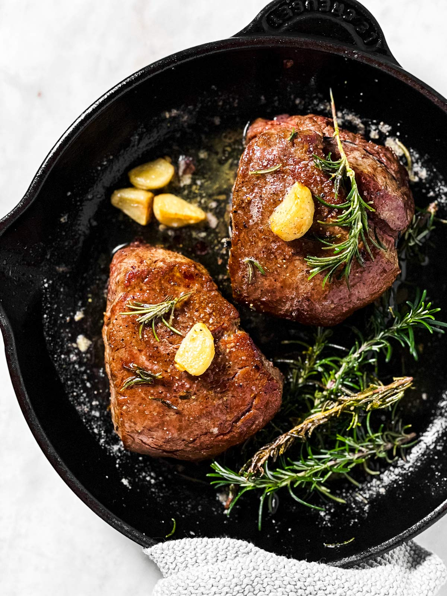

Filet Mignon

Filet Mignon is the quintessential entree for a romantic night at home. It's a very special cut you wouldn't buy for an everyday kind of meal, and it's quick to prepare.
Ingredients
- butter
- filet steaks
- salt/pepper
- garlic
- oil
- rosemary
steps
- Start by removing your Filet Mignons from the fridge about 30-60 minutes before cooking them. Just unwrap them, place them on a plate, salt/pepper them and let them sit on the counter. This is a major part in yielding tender, juicy steaks.
- Once ready, heat the oven to 360°F and place a cast-iron skillet over high heat on your stove.Let it heat up well, then add the oil and sear your filet steaks without moving them until a brown crust forms on the bottom and they easily release from the pan. Flip and sear/brown the other side in the same way.(They take about 2-3 minutes per side for 6-8oz steaks; 1-2 minutes for 4oz petite steaks).
- Immediately take the pan off the heat, then add the butter, garlic and rosemary to the pan. The butter will splatter and melt immediately. I like to baste the steaks with a few tablespoons of the butter before adding them to the oven.
- lace the skillet in the hot oven for 2-8 minutes, depending on how done you like your beef and the exact size of your Filet Mignons. Mine took 3 minutes to cook to medium-rare. As a rule of thumb, 5 minutes will yield fillet steaks cooked to about medium. 3-4 minutes will yield medium-rare fillet steaks. 2 minutes will yield rare fillet steaks. 6-7 minutes will yield medium-well and 8 minutes well-done fillet steaks. The exact timing depends on your exact Filet Mignon weight and thickness.
- Once done, you’ll want to remove the skillet from the oven. Remove the Filet Mignons to a plate, tent with foil and allow to rest for 5-10 minutes before serving with the butter and garlic from the pan.